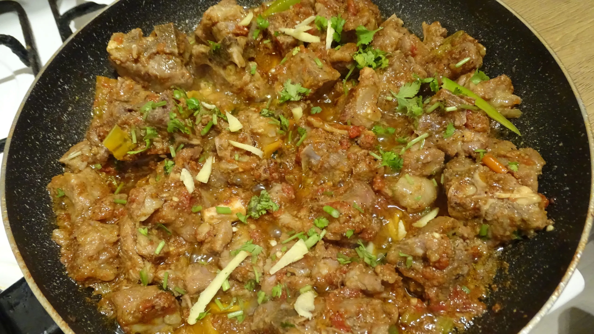

Charsi Karahi

Description
A delicious chicken karahi recipe made with no onions but loaded with tomatoey goodness.
The chicken is fried in oil then the tomatoes are cooked until the skin can be removed before being
broken down to form a rich and luscious tomato masala.
Packed with tons of flavour, this charsi chicken karahi recipe is just too good to be true.
Different to other chicken curry recipes this chicken curry recipe is made with simple ingredients yet
is extremely hard to beat in taste.
Serve with homemade naan bread for a delicious dinner.
Ingredients
- 300ml Oil
- 800g Chicken
- 6 Tomatoes
- 1 tbsp Garlic Paste
- 1 tsp Salt
- 1 tsp Black Pepper
- 5 Green Chillies
- Ginger Julienne
Instructions
- Add the chicken, oil and salt then cook on medium heat for 8-10 minutes until the chicken
changes colour and turns white
- Remove any excess oil then add the slices green chillies and garlic paste then sauté for 1-2 minutes
- Chop the tomatoes in half and place face down on the chicken before covering and cook for 4-5 minutes
- Use tongs and remove the tomato skins then cook for 8-10 minutes on high heat until any excess water dries up
- Add the black pepper and julienne ginger then cook for 1-2 minutes
- Serve immediately with a side of homemade naan bread and enjoy!